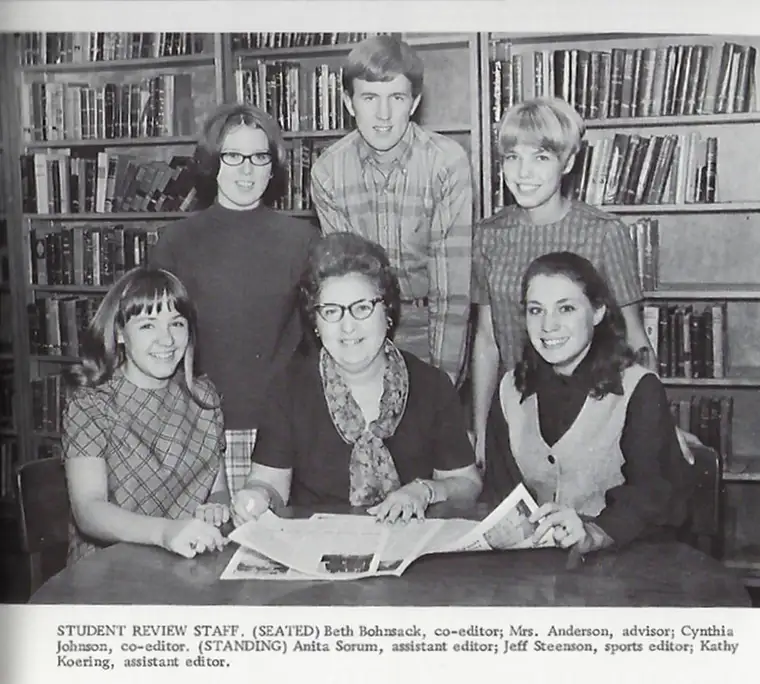

ST. PAUL, MINN. – Tying Monsignor Jeffrey Steenson’s winding history back to North Dakota brings to mind the “needle in a haystack” adage.
Even his Wikipedia page belies his beginnings, though it traces his roots in the evangelical church, becoming an Episcopal bishop, and ultimately joining – and leading, with Vatican assistance – a rare group of married Catholic priests.
Finally, the “needle” appears in a tiny sentence within a longer article: “He grew up on a farm in North Dakota.”
“Yes, I grew up in Hillsboro – my dad was a farmer – and I graduated high school in 1970,” Steenson confirms. Much of his family still lives in the area, which, he says, prepared him well for a life of travel and higher education – not to mention becoming an airplane pilot and pastor.
The family farm, comprising mainly sugar-beet production, had been settled in the 19th century by his father’s grandfather. “My brother farms it now, but ever since that area was opened to settlers, the family’s been there.”

But Steenson sought another path, first studying history at Trinity Evangelical Divinity School in Illinois. “I worked as a sportswriter for a suburban daily in the Chicago area, covering the White Sox and Chicago Cubs.”
After marrying his wife, Debra, Steenson took a course studying the Church Fathers of early Christianity at St. Mary’s of the Lake Seminary in Mundelein, Illinois, and became hooked.
Now stirred toward the Catholic Church, Steenson was rerouted when his professor, Sister Agnes Cunningham, suggested an alternative, sensing he might have a priestly vocation. Since priests of the Latin Rite are usually married only under rare circumstances, she suggested the Anglican Church – or, in America, the Episcopal Church.
A faith fascination
In childhood, observing his Catholic classmates with their crucifixes and Rosaries, “the things they wore and the things they said and did,” Steenson became curious. Most families were either Catholic or Lutheran, “and there wasn’t much crossover,” he says, noting gratitude for having become well-versed in Scripture in his community Protestant church.
Earning a master’s in divinity from Harvard, and later, a doctorate of philosophy at Oxford University, Steenson, once ordained an Episcopal priest, did parish ministry in Pennsylvania, Texas, and finally New Mexico, where, in 2005, he became the 1000th bishop of the Episcopal Church in the United States of America.
But Rome still whispered, largely through the writings of Pope St. John Paul II, he says, which got “deeper and deeper in my bones.” Eventually, he would meet this teacher he so admired.
In 2007, he resigned as bishop, and during a sabbatical, while at the Pontifical Irish College in Rome, he and his wife were received into the Catholic Church.
By then, the door had been opened by John Paul II for Anglican priests seeking to become Catholic and “not have to check their wives into a convent somewhere,” Steenson says. “It was very gracious of him. So, I was ordained a deacon in December 2008, and then, two months later, was made a (Catholic) priest in Santa Fe.”

Steenson is one of only about 125 such married priests in the United States, and the first to be appointed by Pope Benedict XVI to lead the ordinariate assisting those from the Anglican tradition to become Catholic. He’s also the only non-bishop member of the USCCB. He has three grown children and two grandchildren.
Humble and helpful
Since 2016, Steenson has served as a priest scholar-in-residence at St. Paul Seminary, and assists in the Archdiocese of St. Paul and Minneapolis. He’s also vice president of the Coming Home Network International, which assists Protestants seeking Catholic unity.
Marcus Grodi, network president, says he and his staff didn’t know for years working with Steenson that he was a bishop. “As far as we knew, he was just a Christian considering the Catholic Church.”
Eventually, Grodi invited him as a guest on his television show, “The Journey Home,” which highlights interviews with converts, later inviting him onto the board.
“To the core, (Steenson) is deeply committed to the Church, even though he recognizes the flaws,” Grodi says. “He’s not one to point fingers without noting that we, too, are sinners,” adding, “It’s helped me to appreciate that we’re all on a journey, and it’s only by grace that we’ve been awakened to the beauty of the Christ’s Church.”

Coming home to Hillsboro
Last month, Steenson celebrated Mass at St. Rose of Lima parish in Hillsboro with some of his classmates while in town for their delayed 50th class reunion.
His visit got him thinking about his growing-up years and “the caliber of teachers,” Steenson says. “They were so involved in our lives, and taught me how to think clearly. They pushed you but they weren’t rude.”
He recalls a science teacher explaining one day why phosphorous and water don’t mix. “He then fell into the sink full of water with phosphorus, and it exploded,” Steenson recalls. “Now that’s a really great teacher who will make a real demonstration” for his students’ sakes.
Indeed, his teachers offered “some of the deepest impressions of my whole life,” he says, and bullying never happened. “It was maybe idyllic, and perhaps we were just privileged to grow up in that time,” he adds, “but what a wonderful group of people.”

Greg Downs, a classmate, says their boyhood together did seem simpler. “Back then, you had a bike and rode over to your friend’s house and played touch football, and maybe the clarinet,” adding, “It wasn’t very complicated, and looking back, we realize it was a pretty good place to grow up.”
Richard Mueller rode the school bus with Steenson and recalls his buddy “Jeff” as someone who excelled in academics, ran the mile in track, enjoyed music, and was an excellent writer for the yearbook, and sportswriter for the local paper. “He’s down-to-earth and easy to talk to,” Mueller says, despite his life experience – and having met three popes.
Hearing Steenson present the homily at Mass recently moved Mueller. “It’s the first time I heard him speak other than high school,” he says, noting that the Gospel reading from Mark 5: 35-41 came alive through Steenson’s interpretation. “He reminded us that, even though times are tough, Christ never leaves us.”
Comments on and from clergy
Steenson calls the Diocese of Fargo “an enchanting place,” with unity among both clergy and laity impressive. “And the seminarians I’ve worked with from (North Dakota), they are just salt of the earth; such wonderful guys.”
The Reverend Jayson Miller, secretary to Bishop John Folda, studied under Steenson at St. Paul Seminary in 2015. “He taught an elective class on the Church fathers,” Miller says. “What I took from his class was his love for study, and also the humor that he brought into it. He allowed us to really see the humanity of the Church fathers,” who didn’t always agree.
He recalls learning about how Sts. Jerome and Augustine, in written correspondence, were “not always polite,” and appreciated Steenson’s own experience of struggling through his conversion, ultimately finding “solace and a kind of refuge in the Church fathers, knowing they also struggled in their own way.”
It wasn’t until Steenson attended Mass at a parish where Miller was assigned, in Fargo, that Miller learned of his local origins. “He didn’t seem like a North Dakotan to me,” says Miller, who also grew up on a North Dakota farm. “After all his stories of travels, and his entering the Church, it was a little surprising to find that out.”
Monsignor Thomas Richter of the Bismarck Diocese met Steenson at St. Paul Seminary while on staff together in 2018. “He is clearly very intelligent, kind and gentle,” Richter says. “He laughs easily – that’s always a good sign – and has an affection for the Church.”
Steenson’s unique path benefited the seminarians, he said, and with his affable nature and “fatherly gentleness,” along with being a great scholar, “he had a good rapport with the guys. They trusted him.”
Helping others transition from one faith tradition to another remains a passion of Steenson’s, and he can speak to the challenges. “Sometimes, you have these extraordinarily gifted people who had significant ministries as Protestants, and now they’re just sitting in the pews, and nobody understands what that’s like,” he says. “You have to have a lot of courage, and a lot of support. I’ve been incredibly blessed in that.”
[For the sake of having a repository for my newspaper columns and articles, I reprint them here, with permission, a week after their run date. The preceding ran in The Forum newspaper on July 23, 2021.]